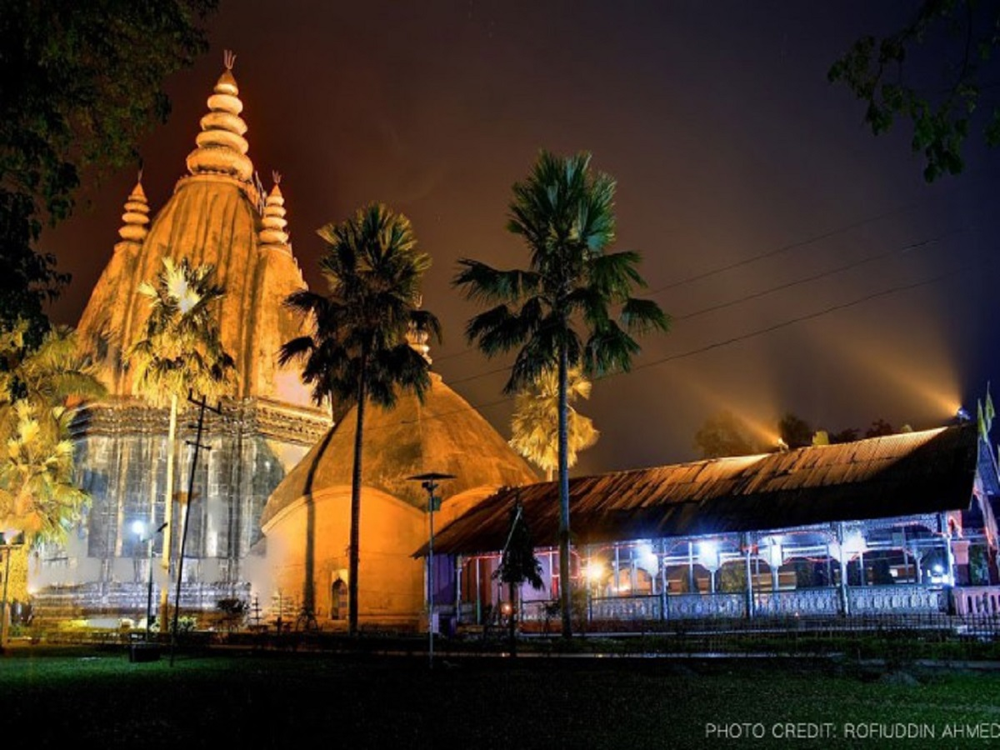

About Tai Museum: The
Assam Tai museum stands on the west bank of Sivasagar Pukhuri and
was inaugurated on 31st January 1992. This particular museum was
constructed to keep the 600 yrs of Ahom glory intact by showcasing
the various antiques collection for the general public. The
collections comprises from Tai books to garments, ornaments,
weaponry and other decorative items used during the Ahom rule by the
ahoms. The museum also promotes research works on Tai language and
literature.
